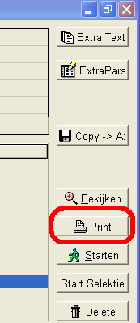
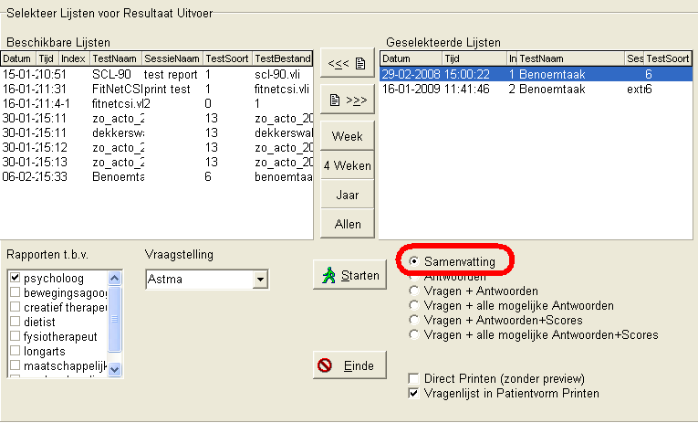
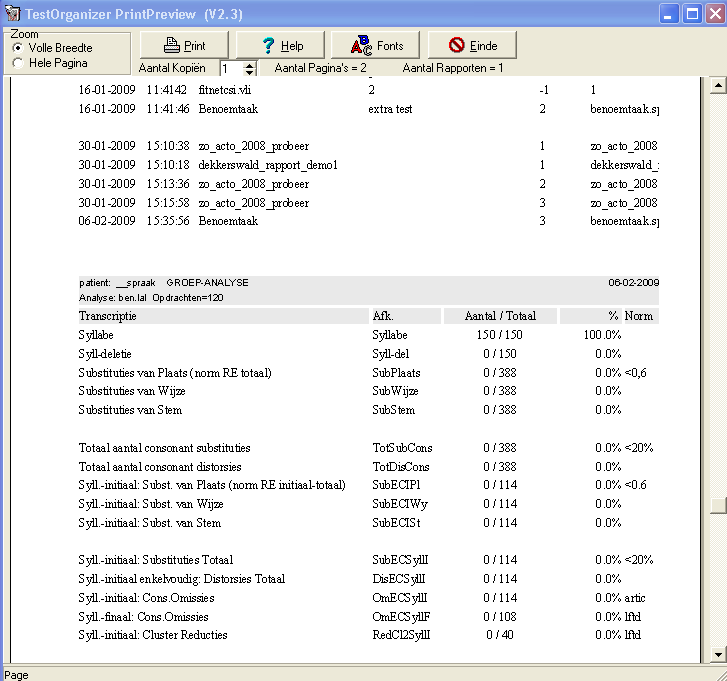

Spraak Analyse (februari 2009)
Analyse Starten
De analyse wordt gestart via de print-toets

Selecteren van de testen
Waarna men in het volgende scherm terecht komt. Links staan alle afgenomen testen, rechts komen de testen te staan die moeten worden geanalyseerd en/of afgedrukt. Met de knoppen tussen deze 2 lijsten, kunnen testen heen en weer worden gesleept (zie verder de handleiding van de Testorganizer voor verdere details). Eén belangrijke instelling is vermeldenswaardig, als voor samenvatting wordt gekozen, worden de geselecteerde testen gezamenlijk geanalyseerd.

Het rapport
Na het starten, verschijnt een rapport met de analyses:
